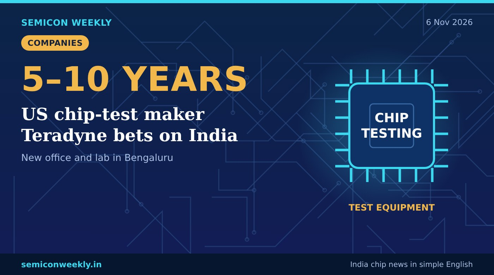

US chip-test maker Teradyne bets on India
Every chip must be tested before it is sold. Teradyne makes the machines that do it, and it sees India as a big market.

In short
- US company Teradyne, which makes chip-testing machines, has opened an office with a lab in Bengaluru.
- It expects Indian demand for chip-testing equipment to grow for the next 5 to 10 years.
- It plans to work with Indian colleges and may hire from smaller-town technical colleges.
Key numbers
5–10 yrsExpected growth period for demand
BengaluruNew office and lab
USWhere Teradyne is based
What happened
- Teradyne makes automatic test equipment (ATE), machines that check whether each chip works after it is made.
- It has opened an office with a lab in Bengaluru.
- It expects demand for chip-testing equipment in India to keep growing for 5 to 10 years as new chip plants start.
- It plans to work with Indian colleges and may hire engineers from technical colleges in smaller towns.
Why it matters
Why this is useful
- India's new chip assembly and test (OSAT) plants will need many testing machines.
- A local lab means Indian customers can get support and training nearby.
Why it is good for freshers
- Chip testing is a real career path: test engineering, ATE programming and product engineering.
- Freshers from smaller-town colleges may get a chance, not only those from big-city colleges.
- Learn DFT basics (scan, ATPG, BIST) and Python scripting; both help in test roles. See our DFT roadmap.
Why it is good for India
- Test equipment makers coming to India makes it easier to build and run chip plants here.
- More test work in India means more jobs beyond chip design.
Words in this story
- ATE (automatic test equipment): machines that test chips quickly after they are made.
- OSAT: a company that assembles, packages and tests chips for others.
- Product engineer: an engineer who makes sure a chip works well and can be made in large numbers.